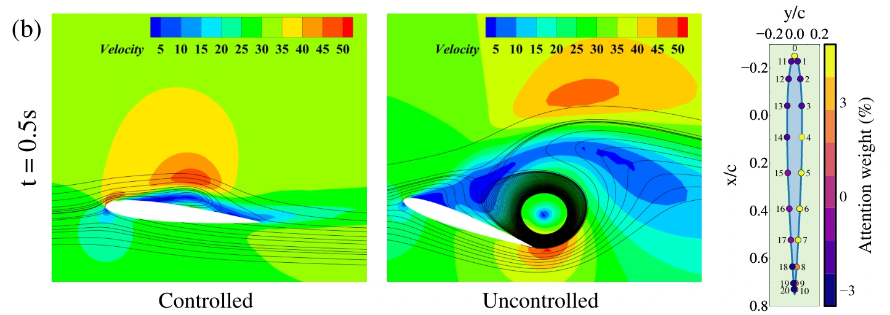

Airfoil pitch control
Physics of Fluids · First-author paperReinforcement learning for airfoil pitch control in a separated wake.
I coupled computational fluid dynamics with reinforcement learning to control an airfoil in a separated wake. I then examined how the learned policy responded to changes in the flow.

Flow setup and measurements
I modeled an airfoil descending through the wake of a backward-facing step. Surface pressure measurements supplied the feedback to the controller.


Control and aerodynamic performance
The controller adjusts pitch to track lift as the wake changes. These comparisons show the tracking response and the effect of including a drag penalty.


Wake development
The snapshots compare the controlled and uncontrolled flow at four stages of the descent. Each pair retains its original color scale.


Interpreting the learned controller
I compared attention patterns and recurrent states with changes in the flow to see which measurements and past observations informed the controller.


Publication
C. Hu, W. Sun, S. Cao, and J. Wang
Physics of Fluids 38(10), 108103 (2026)